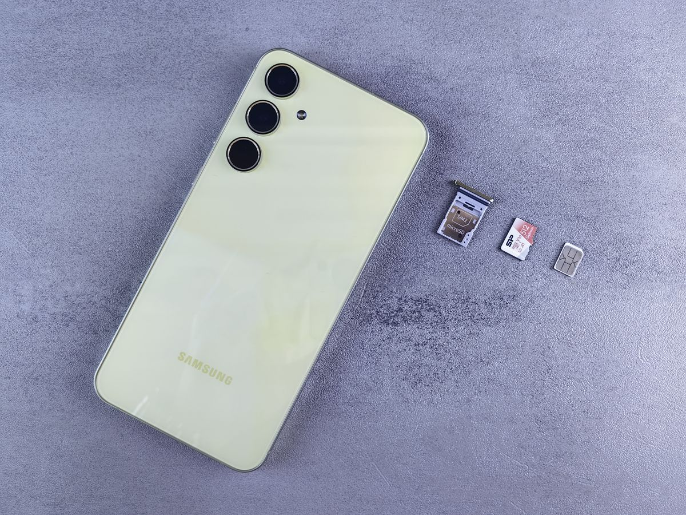
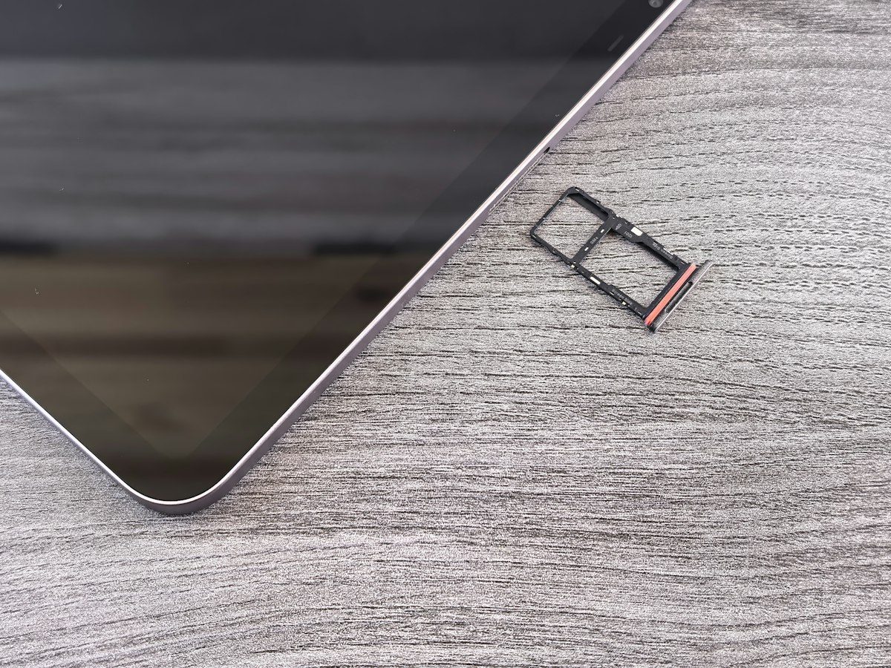

收到SIM卡后如何开始
从辨认规格、安装到收发测试，按顺序把新号码准备好。适用于本站的英国 giffgaff 和美国 Ultra Mobile 电话卡。

刚收到卡，先把卡套和交付邮件留好。用订单上的商品名称核对运营商和规格，再决定是自行开通，还是按照已包含激活服务的交付指引安装。开通、安装和连上网络是三个环节，逐个确认会更容易排查。
第一步，确认自己收到哪种卡
未激活实体卡需要先在运营商处开通。包激活实体卡请先确认开通状态，再按随卡说明操作。eSIM 的安装材料通常通过电子方式交付，可能是一张二维码，也可能是一条链接或一组手动输入的信息。
先确认手机已经解除运营商锁，能识别其他运营商的卡。选择 eSIM 的话，要核对手机的完整型号和销售地区，并观察设置里是否有「添加 eSIM」选项。安装前连上稳定的 Wi-Fi，把二维码或激活码放在自己能安全找回的地方。


第二步，开通或安装
giffgaff 未激活实体卡
在 giffgaff 官网进入激活页面（giffgaff.com/activate），输入卡套上的六位激活码。开通一个新号码时，先退出已有的 giffgaff 账号，再用你能长期访问的邮箱建立一个新账号。在已绑定号码的账号上操作，可能会把原号码转到新卡上。按页面提示选择套餐或充值，完成付款和验证。提交后留意状态页和确认邮件，支付选项与所需金额以页面当时显示为准。
如果付款页面显示失败，先查看银行卡和账户记录，确认是否已经扣款或开通，以免重复提交。向客服描述卡片规格、所在地区和出错的步骤就有帮助。发送报错截图前，遮住激活码、验证码和支付信息。
包激活的实体卡和 eSIM
本站的 Ultra Mobile 两种规格都包含激活，giffgaff 也有包激活规格。先看交付说明，核对开通状态和后续步骤。收到确认后，实体卡按卡托方向插入手机。eSIM 在手机设置中找到「添加 eSIM」，按交付指引扫码或用其他方式安装。iPhone 通常在「设置 → 蜂窝网络」里操作，安卓手机可在设置里搜「SIM」或「eSIM」。
如果页面提示二维码已用过、配置已安装或线路正在激活，先去 SIM 列表看新线路是否已经出现。装好的 eSIM 先保留，换机或重装之前先核对运营商的迁移办法。
第三步，从一条普通短信开始测试
双卡手机可以把新线路命名为「英国」或「美国」，方便看清每次用的是哪张卡。保持原来的主卡负责移动数据，等确认新卡的漫游费和数据套餐之后，再按需调整。新线路打开后，先看有没有连接到网络，再用另一部手机测试发出和收到普通短信。需要通话的话，核对资费后再试拨。
如果一直显示无服务，先检查线路是否打开、账号是否已激活，以及当前位置是否在运营商的覆盖或漫游范围内。境外用卡时，余额、合作网络和设备兼容性都会影响结果。普通短信收得到、某个 App 的验证码收不到时，可以再查该 App 对区号、号码类型和发送频率的规定。
Ultra Mobile 用户如果打算用 Wi-Fi Calling，先查套餐和设备是否支持。运营商或手机可能要求你在设置中启用，并完成相应资料配置。开通后再单独实测你会用到的通话或短信。费用按运营商的规定核对。
测通之后，再把号码绑到账户
在运营商账户里记下完整号码、充值入口和余额，查清续费日期、长期不用会不会停号，以及哪些活动算保号。giffgaff 将连续六个月未使用的 SIM 视为不活跃。Ultra Mobile 则需要按具体套餐核对余额和续费规则。如果这是一张备用卡，现在就设个日历提醒。
最后再把新号码添加到目标账户上。支持恢复邮箱、验证器或恢复码的，可以同时配置一个备用入口。这样以后换手机、换卡或收不到短信时，你还有可以自己掌握的恢复路径。
封面与配图来源于网络，侵删。